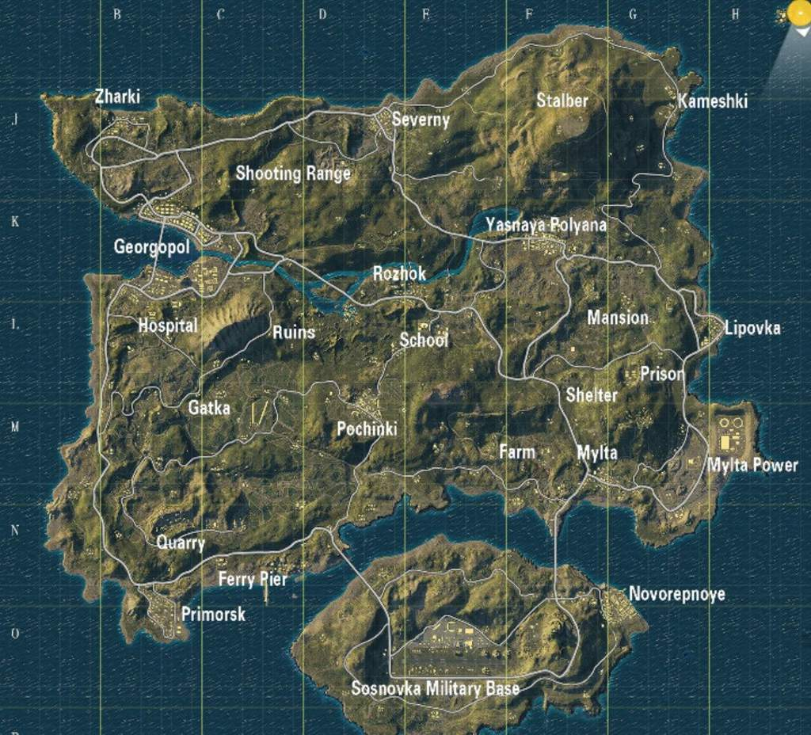
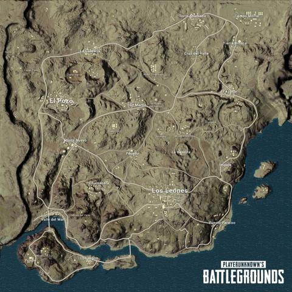
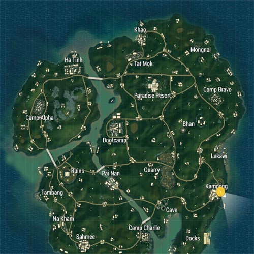
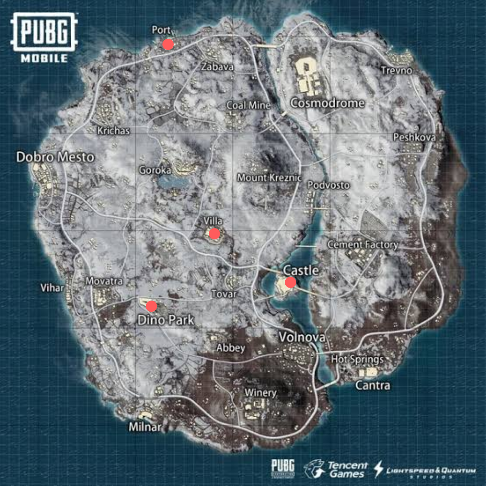

MAPAS
El juego contiene un sistema aleatorio de tiempo lo que permite que en una misma partida se haga de noche, llueva, se forme una tormenta o incluso que se forme niebla impidiendo la visibilidad del jugador. En el caso de que se haga de noche, aparecerá un artículo nuevo llamado gafas de visión nocturna, permitiendo al jugador ver mejor en las noches. El juego actualmente cuenta con 4 mapas y 1 retirado del juego.
Erangel:
El primer mapa del juego, con un área de aproximadamente 8x8 km, formado por pueblos y algunas ciudades. La ciudad representativa de este mapa es Pochinki, la cual cuenta con provisiones para más de un escuadrón, sin embargo, al ser una zona con muchas provisiones, hace que mucha gente decida aterrizar aquí, teniendo enfrentamientos continuos. Los árboles pueden ser buena idea para emboscar. El mapa presenta muchos almacenes que suelen tener chalecos, cascos o mochilas.

Miramar:
Es un mapa desértico, un poco más grande que Erangel, formado por grandes ciudades y montañas. Es recomendable moverse ya que no hay muchos árboles y por esto es blanco fácil. Su ciudad más grande es Los Leones (más o menos 3 veces más grande que Pochinki). Esta zona tiene muchos puntos de spawn de vehículos y muchos edificios grandes que son eficaces para localizar enemigos. Ir en vehículos por montañas puede dar mucha desventaja, más si se quiere atropellar a un enemigo; es recomendable llevar camionetas.

Sanhok
Sanhok: Es un mapa ambientado en una selva tropical, este mapa es mucho más pequeño que Erangel o Miramar (4x4 kilómetros), siendo los enfrentamientos más frecuentes. Está formado por 3 islas unidas por puentes y muchos pueblos, es más difícil localizar a los enemigos. Los árboles y arbustos serán la principal táctica para ganar o pasar desapercibido. Está mucho más vacío de ciudades, pueblos y puntos de interés, lo que hace que el mapa tenga muchos lugares llamados "campo abierto".Las casas suelen ser chozas. Algunos lugares representativos son "Paradise Resort", "Bootcamp" y "Ruins" en los cuales mucha gente decide caer allí, por lo tanto son zonas con mucha acción y guerra.

Vikendi
Vikendi: Es un mapa ambientado en el invierno, siendo un mapa 6x6, está conformado por 2 grandes islas (y una más pequeña) unidas por puentes, está mucho más lleno de ciudades, pueblos y puntos de interés, el mapa está casi repleto de nieve excepto por la parte sur del mapa, haciendo al jugador un blanco más fácil. No contiene un ciclo diurno ya que el tiempo se elige aleatoriamente al principio de la partida. Cuando el tiempo es de noche se puede observar una Aurora Boreal en el cielo, este mapa fue retirado del juego con el lanzamiento de Karakin y volvio al juego el 22 de abril de 2020 con el parche 7.1.
